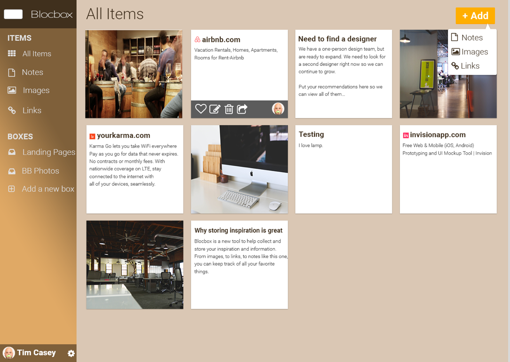

Summary
I was tasked with designing Blocbox, a SaaS (Software as a Service) web application which allows people to collect information and store it in a single place. A user would be able to create simple documents, store images, links to websites, and collaborate with others.
The Problem
Several problems exist with the current methods of saving and sharing items online and there does not seem to be a clear consensus of a website that stands out among the rest. Many people primarily save items as favorites on their preferred web browser because it's either the only way of saving or sharing content they know how to use, or because they like the ease of recalling and searching bookmarks. People who primarily save and share items on social media sites such as Facebook, Pinterest and Twitter sometimes lose track of bookmarks, as these sites do not allow you to categorically sort your saved items. Meanwhile, sites like Box or Dropbox are too expensive and too complex for casual needs.
The Solution
Blocbox would be a website that would allow users to learn more about the product from an initial landing page, then subsequently sign up and/or sign in with E-mail, Facebook and Twitter. After signing up/in, a primary dashboard would display which would give users the ability to add and/or view images, links and text-based documents. Additionally, users would be able to add collaborators who can view the original user’s content and make edits of their own as well. Blocbox would have three pricing tiers-Free, Professional- $5 per month, and Expert, $10 per month. This would satisfy the requirement of affordable pricing while also differentiating the offerings, with two specific options for those who are looking for a casual experience and one for the user seeking to use the site for business purposes. Above all, the site would be user-friendly and easy to navigate for people of all ages.
VIEW INVISION PROTOTYPEUser Survey
Before beginning to design the Blocbox website, I needed to create a survey and analyze the responses to see where the market stands now, learn more about what is frustrating users of current cloud storage sites (or stopping potential users from utilizing one) and then create a website that would rectify these shortcomings.
The results of the survey indicated that:
The majority of those surveyed (62.5%) were between the ages of 25-34. I honed in on this age bracket as I began to conduct interviews and create user personas.
25% of the respondents were teachers, 25% were students (one High School/one Graduate) and the remainder work with clients (accountant, sales, metrics consultant and video editor) and find note taking and file sharing beneficial.
87.5% of respondents save a link or image that interests them online in "most cases."
75% of those surveyed report that save links and images on their browser and Facebook, while 50% of respondents also reported that they save on Pinterest as well.
71.5% of respondents reported that they primarily save for business purposes, while all respondents say that they write and keep notes for personal reasons as well.
75% reported that they work in a collaborative environment. 50% said that they share resources and collaborate sometimes and the remaining 50% responded that they do so often.
Users who primarily save and share content in their browser do so because it's either the only tool they know how to use or because they like the 'ease of recalling and searching bookmarks." The things that they like least about the sites that they use for storage are that it can be hard to find what they are looking for or they lose their bookmarks because there aren't any effective methods for categorizing their saved content. One user reported that she does not like posting things that others could see and would like the ability to save privately.
The respondents reported that they enjoy being able to sync to the cloud for easy access from any device, they prefer color-coded means of marking content and they like to save on programs that they can access from their smartphones, so these links are always available. They do not like having to pay for apps and find that formatting isn't always the easiest or available on certain applications.
It clearly seemed that users would gladly use a cloud storage site if it allowed them to categorize their images, links and notes and save and sync their content across all of their devices. The chances would increase significantly if it was more affordable than the competition (i.e. Box, Dropbox, Evernote, etc.)
User Personas
Melissa, 17, a student in New York, primarily uses Facebook and Youtube to save and or share articles related to music therapy, or general articles and videos for her own enjoyment. She's looking to find a central site that will sync all of her saved articles, videos and notes at a low cost—under $5. She often finds that she loses track of saved articles and links because she cannot organize these to her liking on these sites.
Danielle, 28, an HR Metrics Analyst in Manhattan is looking for an app that will her to streamline note—taking and organization of those notes, as well as allow her to save articles and links categorically for business purposes. She is often frustrated that she ca n’t categorize links on Facebook like she can on Pinterest.
Stephen, 40, a Global History teacher in Riverhead, New York, likes to save articles and Youtube videos to show his students. He needs a note-ta king app that will sync across all devices and would like an easy to use site that would allow him to save and categorize notes, links and videos for easy access.
User Stories
After creating user personas and analyzing survey results, I developed a list of user stories for new and returning users of the Blocbox site. After combing through the list, I identified the stories that were necessary for an MVP-these are highlighted in green-and the stories that could be explored in future iterations-these are listed in red.
New User Stories
User Flows And Sitemap
Next, I designed user flows for the key navigations throughout the app. The first three fleshed-out user flows illustrated what a user could expect upon visiting the landing page, how a new user would sign up, how a returning user would sign in. The final user flow demonstrated the shared tasks that each user could take part in from the dashboard. I also created a site map that would show the overall flow of the app.
Competitive Analysis
Before beginning to design the Blocbox website, I needed to survey the landscape to find out what the strengths and weaknesses of the competition were. Box, Evernote and Dropbox were the three competitors that I chose to examine.
Box:
Appears to position itself as a solution for both the individual user, as well as any business.
Box offer a free basic subscription (10 GB and 250 MB file upload limit) for the personal user. There are also three different pricing tiers for businesses.
Box has excellent connectivity with major apps like Salesforce and Chatter.
Box’s online document editing is not as strong as others in it’s space and it's possible to become overwhelmed by all of these different package options.
Box also does not have the same brand recognition of a major player like Amazon Cloud or Dropbox.
Blocbox has an opportunity to attack their multi-tiered pricing with more streamlined options to limit confusion.
Blocbox will need to overcome the threat of an already oversaturated market and the flexibility that Box allows with it’s app connectivity and instantaneous downloads features.
Evernote:
Positions itself as a solution for both consumers and businesses. It is clear though, that they are targeting the more cost-conscious purchaser.
Evernote offers three pricing options for the general user and one, flat $12 per month per user model for businesses.
The general look and feel of their website-with many bright colors and some hand-drawn illustrations-seems to scream that they are geared more for personal use and/or the creative professional, as opposed to the corporate world.
Like Box, Evernote also allows for collaboration between multiple users for the sharing and editing of notes.
Evernote only allows 60 MB of new uploads per month on the base subscription and you cannot access documents offline on basic model. These are areas in which Blocbox could improve upon it’s competitor. We can also beat Evernote by offering note history offline across all levels of service.
Evernote's ease of use, low prices and stronger brand recognition is an immediate threat to Blocbox right out of the gate.
Dropbox:
Is among the most popular and widely-used mobile cloud storage service among professionals.
Has an elegant style and display and works well with all major OS offerings-Windows, Mac, iOS and Android.
Dropbox allows less free storage on their basic plan than Box does, (2GB as opposed to 10GB.)
Not as user-friendly as Evernote. You can manually customize to your liking, but it is much more time-consuming to organize than in the aforementioned apps.
While only starting at 12.50 per business user, you do not have access to the advanced training for end user and admins, nor the dedicated account success manager that the enterprise solution offers.
Dropbox can be beat by offering easier options for organization and more affordable options for price and storage
Dropbox’s greatest threats to Blocbox are that it is tremendously popular and allows sharing of all file sizes across many, if not all, devices.
Branding/Style Guide

When designing the Blocbox logo, I wanted to create something simple, yet iconic, much as Apple has with their insignia, as well as Facebook and Google have with their iconic “F” and “G” logos, specifically. I settled on the rounded rectangle box, (far right,) to evoke a simple logo that “just works,” as Apple would say. I also spaced out and centered the Blocbox logo, drawing inspiration from a style similar to Apple’s typeface to complete the logo as well. I broke the typography down as follows:
I started out with Roboto as my heading typeface and Lora as my paragraph typeface. After some experimenting, I chose to flip the two-setting Lora as the heading typeface and Roboto as the paragraph typeface. I felt that Lora did not mesh as well with a smaller character size, it felt out of place and dated, like text out of an old novel against this modern, twenty-first century heading. Once I began building the mock-ups, I noticed that Lora felt out of place entirely, so I switched to a Roboto Slab typeface for the heading. I felt that this was a better fit for the theme and identity that I was trying to evoke with Blocbox.
When it came to deciding on a color scheme, I've always liked wood/faux-wood accessories (i.e. chairs, tables, my own car dashboard, etc.) and I wanted to create something that evokes a high-quality, elegant finish as these items do. I've kept the general templates the same, but created a color swatch in various shades of beige and brown, while using a dark brown color to make the text pop out. I've chosen orange to differentiate the call to action button from the other elements of the dashboard, creating a uniquely colored button, but one that is not radically different from the other shades of brown contained within the dashboard.
Low Fidelity Wireframes

I used Balsamiq to begin creating low fidelity wireframes for Blocbox. It was important to create a simple, yet elegant site that featured prominent, immediate calls to action, along with transparent pricing and user testimonials. After conducting preference testing on three different landing pages, the final one below on the far right was the overwhelming favorite, so I began to design around that concept. I also created mockups of the sign up and sign in flows as well.
Wireframes were that illustrated the dashboard experience for the user were also created. These wireframes illustrated what a user would see after first signing up, what the dashboard would look like once items were added and what the account settings page would look like. It was important to map out how the user would update their account, so that experience was accounted for in the final wireframe shown above. Now that I had the initial furniture for the site in place, I began designing the high fidelity wireframes for Blocbox.
High Fidelity Wireframes
Next, I began designing high fidelity wireframes in Adobe Illustrator. There was only one minor change to the finalized wireframes-the features section of the landing page was changed to a horizontal orientation as opposed to the vertical orientation seen in the original wireframes. In the early stages of the design process of these wireframes, I experimented with a dashboard interface that had a horizontal navigation (seen in the final two wireframes above,) as opposed to the vertical navigation present in the initial wireframes. After conferring with my mentor, Chris, we determined that the vertical navigation was the better of the two options, because it was more user friendly and simpler than the UI for a dashboard with horizontal navigation would be. A horizontal dashboard would have required several different dropdown menu options to account for all of the actions that a user could take, which would clutter the page and increase the chances that the user may accidentally click on a link other than the one they intended.
Now that I had finalized the high fidelity wireframes for Blocbox, I designed a clickable prototype in InVision to test the usability of the site and gather feedback from users.
User Testing
Mary V., age 27, an Administrative Assistant in Syracuse, New York, was the first to view the completed pages. She stated that she liked the layout and color combination and found that the navigation was easy enough and straightforward.
The next person to look at the prototype was Austin B., age 28, an Academic Advisor in Buffalo, New York. He said that he liked the dashboard layout, as well as the color scheme of the site. He liked the simplicity of the site and thought it was easy to use.
Andrew K., age 27, a music teacher on Long Island, said he liked the colors and layout, but that the text on the pop-up menus was too light and a strain on the eyes. He suggested making this text brighter in order to prevent strain on the eyes, a change which was accounted for in the final version seen below.
Before deploying the final version of Blocbox, I ran a few user tests on Usability Hub to ensure that I was making the correct design decisions in three key areas. The first test was a five second test used to find out if visitors to the site could correctly identify what the site was for and also asked if the brand appeared trustworthy.
The insights gleaned from this test were that:
88% of users were able to correctly identify that this was a type of storage site that allowed you to share notes, images and links, as well as collaborate with others.
The remaining 12% could not articulate what the site was for and stated that they needed more time to view the content on the landing page.
76% of those surveyed stated that the brand seemed trustworthy, 12% stated that the brand seemed “somewhat trustworthy,” while the remaining 12% stated that it the brand did not seem trustworthy.
Those who did not find the site trustworthy felt this way because a combination of the color scheme, the layout of the landing page and the large text made this look like a “spamming site with loads of viruses.”
The second test was a preference test that gave users two options for the placement of the “Add” button on the dashboard, then asked them which option they preferred.
The results of this preference test indicated that 80% of users preferred the first option (above, left.) The reasons for this choice varied between it “being more obvious up top,” “remaining visible after more items are added” and “still draws attention up top as a result of the distinct call-to-action color.”
The third and final user test asked users to walk through the process of adding a new image on the site. This process is illustrated below.
- 
60% of the users who took this test were able to complete it successfully in an average of 32.7 seconds. Each respondent stated that it was easy to figure out where to click because of the large, distinguished call to action button and the “Images” text and icons that followed after.
Now that I had completed this final round of user testing, I designed a responsive website for the landing and dashboard pages, then successfully deployed the Blocbox project.
VIEW THE BLOCBOX WEBSITEConclusion
This was my first design project, so in addition to learning the ins and outs of the design process, I would say that the most rewarding parts of this project were learning the ropes of an agile development process, learning how to conduct user interviews and building user personas. Building this site was a great exercise in building a basic foundation of knowledge in the field of User Experience Design and I intend to keep working to increase my knowledge and skill level.
In closing, I have learned that it’s not about reinventing from a UI perspective, nor is it about what the designer thinks works best. In contrast, it’s about learning what works best for users and reiterating on designs until you can deploy a product that is accessible and as user-friendly for as many people as possible. This was a good starting point towards those goals and I look forward to applying the knowledge I’ve begun to learn here to build bigger and better applications in the future.
RETURN TO HOMEPAGE